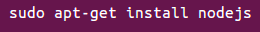
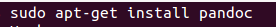

Node.js se ha instalado con el comando:

Se ha instalado el sistema de manejo de paquetes y gestión de módulos de node.js:
Para comprobar que npm funciona correctamente:

Se ha procedido a la instalacion de pandoc:

Se han utilizado los siguientes comandos: